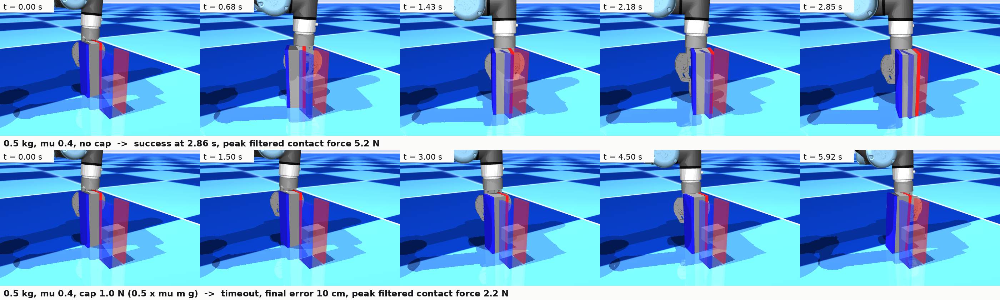
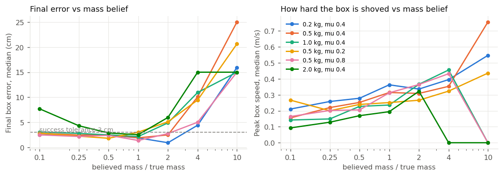
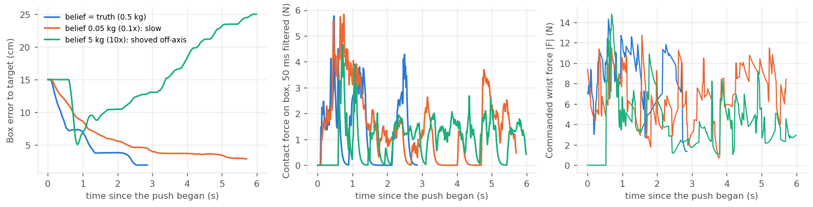
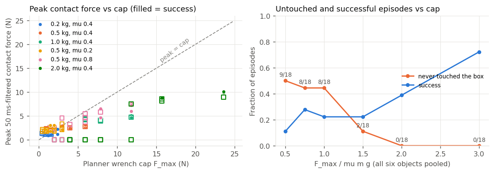
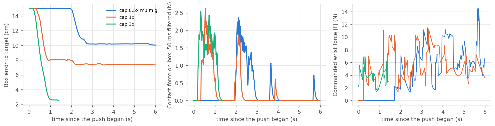

<title>Wrench prompting as a physical-parameter prior</title>
<link rel="preconnect" href="https://fonts.googleapis.com">
<link rel="stylesheet" href="https://fonts.googleapis.com/css2?family=Source+Serif+4:opsz,wght@8..60,400;8..60,600&family=Source+Sans+3:wght@400;600&family=JetBrains+Mono:wght@400;500&display=swap">
<style>
:root {
  color-scheme: light;
  --bg: #fbfbf9; --ink: #16171a; --ink-2: #4f5359; --muted: #7c8086;
  --rule: #dedfe2; --accent: #2a78d6; --accent-soft: #e8f0fb; --surface-2: #f2f3f1;
  --code-bg: #eff0ee; --warn: #b4560e;
  --serif: "Source Serif 4", Georgia, "Times New Roman", serif;
  --sans: "Source Sans 3", system-ui, -apple-system, "Segoe UI", sans-serif;
  --mono: "JetBrains Mono", ui-monospace, "SF Mono", Menlo, monospace;
}
@media (prefers-color-scheme: dark) {
  :root:not([data-theme="light"]) {
    color-scheme: dark;
    --bg: #17181b; --ink: #ebebe8; --ink-2: #b3b6bb; --muted: #83878d;
    --rule: #34373c; --accent: #3987e5; --accent-soft: #1d2a3d; --surface-2: #202226;
    --code-bg: #202226; --warn: #e08a3c;
  }
}
:root[data-theme="dark"] {
  color-scheme: dark;
  --bg: #17181b; --ink: #ebebe8; --ink-2: #b3b6bb; --muted: #83878d;
  --rule: #34373c; --accent: #3987e5; --accent-soft: #1d2a3d; --surface-2: #202226;
  --code-bg: #202226; --warn: #e08a3c;
}
body { background: var(--bg); color: var(--ink); font-family: var(--sans); font-size: 16px; line-height: 1.55; margin: 0; }
main { max-width: 980px; margin: 0 auto; padding: 40px 24px 96px; }
.text { max-width: 72ch; }
h1 { font-family: var(--serif); font-weight: 600; font-size: 2rem; line-height: 1.2; margin: 0 0 8px; text-wrap: balance; letter-spacing: -0.005em; }
h2 { font-family: var(--serif); font-weight: 600; font-size: 1.35rem; margin: 48px 0 12px; text-wrap: balance; }
h3 { font-family: var(--sans); font-weight: 600; font-size: 1rem; margin: 28px 0 8px; }
p { margin: 0 0 14px; }
.meta { color: var(--ink-2); font-size: 0.92rem; display: flex; flex-wrap: wrap; gap: 6px 22px; margin: 0 0 32px; padding-bottom: 16px; border-bottom: 1px solid var(--rule); }
.meta span b { font-weight: 600; color: var(--ink); }
.eyebrow { font-family: var(--sans); text-transform: uppercase; letter-spacing: 0.08em; font-size: 0.75rem; color: var(--muted); margin: 0 0 6px; }
code, .mono { font-family: var(--mono); font-size: 0.86em; }
code { background: var(--code-bg); padding: 1px 5px; border-radius: 3px; }
pre { background: var(--code-bg); padding: 12px 14px; border-radius: 4px; overflow-x: auto; font-size: 0.82rem; line-height: 1.45; }
pre code { background: none; padding: 0; }
a { color: var(--accent); text-decoration: none; border-bottom: 1px solid color-mix(in srgb, var(--accent) 35%, transparent); }
a:hover, a:focus-visible { border-bottom-color: var(--accent); outline: none; }
a:focus-visible { outline: 2px solid var(--accent); outline-offset: 2px; }
.tablewrap { overflow-x: auto; margin: 12px 0 20px; }
table { border-collapse: collapse; width: 100%; font-size: 0.9rem; font-variant-numeric: tabular-nums; }
th, td { text-align: left; vertical-align: top; padding: 7px 10px; border-bottom: 1px solid var(--rule); }
th { font-weight: 600; color: var(--ink-2); background: var(--surface-2); font-size: 0.84rem; }
td.num, th.num { text-align: right; }
figure { margin: 20px 0 28px; width: 980px; max-width: calc(100vw - 48px); }
figure img { max-width: 100%; height: auto; display: block; border: 1px solid var(--rule); border-radius: 3px; background: #fcfcfb; }
figcaption { font-size: 0.88rem; color: var(--ink-2); margin-top: 8px; max-width: 80ch; }
.finding { border-left: 3px solid var(--accent); padding: 4px 0 4px 16px; margin: 16px 0 20px; background: var(--accent-soft); border-radius: 0 4px 4px 0; }
.finding p:last-child { margin-bottom: 0; }
ol.program { padding-left: 1.4em; }
ol.program li { margin-bottom: 12px; }
ul.todo { padding-left: 1.2em; }
ul.todo li { margin-bottom: 8px; }
.small { font-size: 0.88rem; color: var(--ink-2); }
.kv { display: grid; grid-template-columns: max-content 1fr; gap: 4px 18px; font-size: 0.92rem; margin: 8px 0 16px; }
.kv div:nth-child(odd) { color: var(--muted); }
hr { border: 0; border-top: 1px solid var(--rule); margin: 40px 0; }
@media (prefers-reduced-motion: reduce) { * { scroll-behavior: auto; } }
</style>
<main>
<p class="eyebrow">Research memo · GOLEM / wrench prompting · 2026-09-14</p>
<h1>Wrench prompting as a physical-parameter prior for contact MPC</h1>
<div class="meta">
  <span><b>Author</b> Claude Code for W. Xie</span>
  <span><b>Branch</b> <span class="mono">mujoco_mpc @ wxie/wrench-prior</span></span>
  <span><b>Code</b> <span class="mono">mujoco_mpc/studies/wrench_prior/</span></span>
  <span><b>Page</b> <span class="mono">mujoco_mpc/docs/wrench_prior/20260914-wrench_prior_direction.html</span></span>
</div>

<div class="text">
<h2>Verdict</h2>
<p>The 2025 workshop paper put the VLM's number in the one place a controller cannot correct it: a 6-D wrench setpoint tracked open-loop by a proportional velocity law for a VLM-chosen duration. Every result since that worked moved the VLM one level up. OmniVIC (Oct 2025) has the VLM set impedance parameters and retrieves past episodes, 27% to 61% task success. Exp-Force (Mar 2026) has it set a grasp force conditioned on retrieved experience, 0.43 N mean error and a 72% reduction against zero-shot. CHORD (Jun 2026), the paper flagged as "done better", uses no VLM: it defines a contact-wrench-space reward for RL from human motion capture and transfers to a bimanual dexterous platform. It validates the wrench as the right abstraction for manipulation intent and does not touch the question here.</p>
<p>The slot no one has taken is the VLM as a <b>prior on the physical parameters and force bounds of a model-based controller that computes the wrench itself</b>: mass, friction, tip and crush thresholds into the planning model and the cost of a contact MPC. In that slot the wrench is derived rather than dictated, an error in the prior is a measurable model mismatch, and learning from experience is system identification with a Kalman posterior per object class, which is the shape the grasp memory in <span class="mono">magpie_control_rosify v2-dev</span> already has. No reflection prompting is involved.</p>
<p>A first sim measurement on the MJPC <span class="mono">UR5 Magpie</span> model, whose six controls are a Cartesian wrench at the TCP, is in §4. With the correct belief the MPC pushes all six objects (16/18 episodes, median final error 2.2 cm). A belief that the object is heavier than it is fails from 2× on (8/18 at 2×, 1/18 at 4× and at 10×), by shoving the object off-axis or by refusing to push at all; a belief that it is lighter costs little (17/18 at 0.5×, 12/18 at 0.1×) except on the 2 kg object at the actuator's limit, where the wrong model stalls the push and replanning does not recover it. A cap on the predicted contact force below about 1.5× μmg makes the planner refuse contact (8–9 of 18 episodes untouched at 0.5–1×); at 2–3× every object is pushed and the peak force sits at 0.4–0.6 of the cap. The asymmetry and the refusal threshold are the two numbers a VLM prior has to respect, and both are measurable without a robot.</p>
<p>Recommendation: run E0 (§6), a calibration study of VLM mass, friction and force-bound estimates on 30 to 50 household objects with no robot, before committing either student. It takes three days and can end the direction.</p>

<h2>1. What the 2025 paper showed, re-read</h2>
<p>Source: <a href="https://scalingforce.github.io/">scalingforce.github.io</a>, the notebook <span class="mono">MAGPIE/open-grasp/tests/test_scaling_force_v3.ipynb</span> and the prompts in <span class="mono">magpie_prompts/src/magpie_prompts/prompts/sf_*.py</span>.</p>
</div>
<div class="tablewrap"><table>
<tr><th>Claim</th><th>Evidence on the page</th><th>What it establishes</th></tr>
<tr><td>Eliciting wrenches, not trajectories, gives zero-shot generalisation</td><td>51.3% success over 4 tasks (10 trials each, randomised poses); position-control baseline 41.3%</td><td>A 10-point gap on 40 trials per configuration. The paper's own FAQ asks whether 51% is worth writing home about.</td></tr>
<tr><td>VLMs reason about physical properties</td><td>67% "correct property and force estimation" (61.3–72.5% across configurations)</td><td>The estimate is right two times in three by a rubric; no error distribution, no calibration, no per-quantity breakdown.</td></tr>
<tr><td>Coordinate-frame labelling matters</td><td>Wrist-frame labels 32.5–42.5%; world-frame 65–80%; world-aligned wrist frame 70%</td><td>The largest effect in the paper, and it is a visual-prompting result about frames, not a force result.</td></tr>
<tr><td>Force control executes the plan</td><td>Notebook cell 24: <span class="mono">control_type="proportional"</span>, <span class="mono">P=0.0002</span>, the wrench error scaled into a <span class="mono">speedL</span> Cartesian velocity, duration from the VLM</td><td>A force-to-velocity gain with no model of the arm or the object. The 6-D wrench was an open-loop setpoint.</td></tr>
<tr><td>Iterative improvement from interaction feedback</td><td>The <span class="mono">sf_force_reflection</span> prompt: a 30-field template asking the VLM to grade each axis "sufficient / insufficient" and emit deltas</td><td>Described, not quantified. The feedback signal was a 2 Hz downsampled wrench summary in text.</td></tr>
<tr><td>Dual-use finding (<a href="https://arxiv.org/abs/2505.18792">arXiv 2505.18792</a>)</td><td>58% harmful compliance across three models; Claude 3.7 21.5%, GPT-4.1-mini 87.9%, Gemini 62.8%; safeguards also cut helpful contact tasks on bodies</td><td>The one clean, novel result of the project. It stands on its own and is already published.</td></tr>
</table></div>
<div class="text">
<p>The four holes named in the request are all consequences of the interface. The controller could not be characterised because there was no model to characterise it against; the motion could not be complex because a fixed wrench for a fixed duration describes one contact phase; learning from experience could not be studied because the only update path was another prompt.</p>

<h2>2. Where the field went, 2025–2026</h2>
</div>
<div class="tablewrap"><table>
<tr><th>Work</th><th>VLM output</th><th>Controller</th><th>Memory / learning</th><th>Platform, result</th><th>Overlap with this proposal</th></tr>
<tr><td>Unfettered / Scaling Force (2025, rejected)</td><td>6-D wrench + duration + grasp force</td><td>proportional wrench-to-velocity on a UR5</td><td>reflection prompt, unquantified</td><td>UR5 + MAGPIE, H1-2; 51%</td><td>the starting point</td></tr>
<tr><td><a href="https://arxiv.org/abs/2510.17150">OmniVIC</a> (Zhang, Huang, Solak, Ajoudani, Oct 2025)</td><td>variable-impedance parameters</td><td>VIC with F/T feedback</td><td>RAG over a structured episode bank, in-context</td><td>sim + real arm; 27% → 61.4%, fewer force violations</td><td>closest in spirit; controller parameters, not physics; no model-based planner</td></tr>
<tr><td><a href="https://arxiv.org/abs/2603.08668">Exp-Force</a> (Shang, Huang, Fan, Chin, Mar 2026)</td><td>minimum feasible grasp force</td><td>compliant gripper</td><td>retrieved prior grasps, in-context</td><td>129 objects, 30 unseen; 0.43 N MAE, 63% → 87% appropriate force</td><td>DeliGrasp + memory; the same thing the v2-dev grasp memory does with a Kalman filter and DINO retrieval</td></tr>
<tr><td><a href="https://arxiv.org/abs/2607.00033">CHORD</a> (Zhu et al., NVIDIA, Jun 2026)</td><td>none</td><td>RL residual policy → wrist F/T tracking controller</td><td>none; reward from human demos</td><td>4,739 sim tasks, 82%; Dexmate + Sharpa hands, 5 task families</td><td>none. Validates wrench space as the representation of intent.</td></tr>
<tr><td>ForceVLA (2505.22159), CR-VLA-Force (2609.05832), FILIC (2509.17053), CC-VLA</td><td>learned force-aware actions</td><td>compliance / impedance under a VLA</td><td>training data</td><td>force-labelled teleop</td><td>the data-driven route for arm tasks; needs teleop data</td></tr>
<tr><td>Language to Rewards, Eureka, ReKep, VoxPoser (2023–24)</td><td>reward code / keypoint constraints / value maps</td><td>MJPC, RL, trajectory optimisation</td><td>Eureka: reward evolution from training stats</td><td>kinematic tasks</td><td>the "LLM writes the cost" pattern, without force or physical parameters</td></tr>
<tr><td><span class="mono">magpie_control_rosify v2-dev</span> (in-house)</td><td>DeliGrasp force from Gemini</td><td>MAGPIE adaptive grasp, slip guard</td><td>1-D Kalman per object (Q 0.25, R 0.5, P0 4 N²), DINO retrieval</td><td>UR5; 97/100 on a cube, V2 on varied objects</td><td>the memory this proposal reuses</td></tr>
<tr><td><span class="mono">magpie_force_control</span> (in-house)</td><td>—</td><td>Hou admittance at 500 Hz, OptoForce HEX</td><td>—</td><td>UR5</td><td>the deployment plant for §6 E3</td></tr>
</table></div>
<div class="text">

<h2>3. Where the VLM's number should enter</h2>
<p>Three interfaces have been tried or proposed. The columns that matter are what corrects an error and what the robot can measure.</p>
</div>
<div class="tablewrap"><table>
<tr><th>Interface</th><th>VLM emits</th><th>What corrects an error</th><th>What the F/T sensor measures</th><th>What "learning" is</th></tr>
<tr><td>Setpoint (2025)</td><td>the wrench</td><td>nothing; a reflection prompt after the fact</td><td>a trace to summarise in text</td><td>prompt editing</td></tr>
<tr><td>Controller parameters (OmniVIC)</td><td>stiffness, damping, force limits</td><td>the impedance loop absorbs some error</td><td>violations of the limits</td><td>retrieval of similar episodes</td></tr>
<tr><td>Model parameters + bounds (proposed)</td><td>mass, friction, tip and crush thresholds, with intervals</td><td>the MPC replans on its model at 30 Hz; the wrench is an output</td><td>the sliding force μmg at breakaway, the tipping onset: the parameters themselves</td><td>a Kalman/Bayes update of the parameters from the measurement, keyed by object class; the VLM interval is P0</td></tr>
</table></div>
<div class="text">
<p>The third interface makes two claims testable. The VLM's error is a number in the same units as the F/T reading, so the calibration of the prior can be measured without a robot. The controller's sensitivity to that error is a property of the controller, so it can be mapped in simulation and the map tells you how good the prior has to be. Neither was possible with the 2025 interface. It also settles the "real force control" complaint: the MPC allocates contact force through its model, and on the real arm the planned wrench and pose go to the 500 Hz admittance loop in <span class="mono">magpie_force_control</span>, which makes the other student's controller the deployment target rather than a competing thread.</p>

<h2>4. First measurement: belief error and the wrench cap on a wrench-actuated push</h2>
<h3>Setup</h3>
<p>Model: the MJPC <span class="mono">UR5 Magpie</span> task (<span class="mono">build_cmake/mjpc/tasks/ur5/task_magpie.xml</span>). The arm joints are passive (damping 2 N·m·s/rad, gravity compensated); the six controls are a Cartesian wrench at the <span class="mono">eeff</span> site, ±10 N per force axis and ±1 N·m per torque axis. The pushed object is a 6 × 6 × 20 cm box on the floor, mass 0.2–2.0 kg, sliding friction 0.2–0.8, contact time constant 10 ms. The gripper is closed and pointed down; its two finger plates form a 6 cm × 11 cm pusher. A Cartesian servo brings the TCP to 2 cm behind the box face at 1 cm height, then the MPC pushes the box 15 cm to a target on the floor.</p>
<p>Controller: predictive sampling over the six wrench controls, four knots over a 1.0 s horizon, 64 samples, σ 0.35 (3.5 N, 0.35 N·m), replanned every 30 ms, rollouts on the planner's model from the plant's state. Cost terms: the task XML's two-site "Bring" residual (position and yaw), a reach term holding the TCP behind the box, box upright, gripper pointing down, box and hand velocity, control effort, and a one-sided cap on the <b>predicted contact force on the object</b> (the sum of two touch sensors enclosing the finger plates), <span class="mono">max(0, F_touch − F_max)²</span>. Success is the box centre within 3 cm of the target for 0.5 s with tilt under 10°, within 6 s.</p>
<p>Two models are compiled from one spec. The plant carries the true (m, μ); the planner carries the belief (m̂, μ̂) and the cap F_max. Sweep A varies the belief with no cap: m̂/m ∈ {0.1, 0.25, 0.5, 1, 2, 4, 10} at the true μ, and μ̂/μ ∈ {0.5, 2} at the true mass. Sweep B varies the cap at the correct belief: F_max/μmg ∈ {0.5, 0.75, 1, 1.5, 2, 3}. Six objects, three seeds each: 270 episodes, 19.6 min at 3 jobs × 6 rollout threads, 81 ms per plan on 18 cores.</p>
<h3>Baseline: correct belief, no cap</h3>
<p>16 of 18 pushes succeed; median final error 2.2 cm; median time to goal 1.5–2.9 s per object; peak 50 ms-filtered contact force 4.2–9.8 N against sliding forces of 0.8–7.8 N. The two misses are on the μ = 0.2 object (final error 3.0 and 6.9 cm), which slides farthest per impulse. First touch is a 30–50 N spike lasting 3 ms in every episode: a rigid plate meeting a rigid box at 0.2–0.3 m/s. No episode tipped the box.</p>
<figure><figcaption>Top: 0.5 kg, μ 0.4, correct belief, no cap; the box reaches the target at 2.86 s. Bottom: the same object under a 1.0 N cap (0.5× μmg); the planner keeps the predicted contact force near the cap and the box is 10 cm short at 6 s.</figcaption></figure>

<h3>Sweep A: a wrong belief about mass or friction</h3>
<p>Each cell: successes over three seeds, then the median final error, median time to goal over successes, and median peak filtered contact force.</p>
</div>
<div class="tablewrap"><table>
<tr><th>Object (true m, μ)</th><th class="num">μ m g</th><th class="num">m̂ = 0.1×</th><th class="num">m̂ = 0.25×</th><th class="num">m̂ = 0.5×</th><th class="num">m̂ = 1×</th><th class="num">m̂ = 2×</th><th class="num">m̂ = 4×</th><th class="num">m̂ = 10×</th><th class="num">μ̂ = 0.5×</th><th class="num">μ̂ = 2×</th></tr>
<tr><td>0.2 kg, μ 0.4</td><td class="num">0.8 N</td><td class="num"><b>2/3</b><br><span class="small">2.5 cm · 2.2 s · 4.2 N</span></td><td class="num"><b>3/3</b><br><span class="small">2.3 cm · 4.0 s · 4.2 N</span></td><td class="num"><b>3/3</b><br><span class="small">2.4 cm · 3.3 s · 4.4 N</span></td><td class="num"><b>3/3</b><br><span class="small">1.9 cm · 1.5 s · 4.2 N</span></td><td class="num"><b>3/3</b><br><span class="small">0.9 cm · 1.3 s · 5.4 N</span></td><td class="num"><b>1/3</b><br><span class="small">4.4 cm · 5.3 s · 3.8 N</span></td><td class="num"><b>1/3</b><br><span class="small">15.9 cm · 1.0 s · 2.1 N</span></td><td class="num"><b>2/3</b><br><span class="small">1.4 cm · 1.9 s · 1.8 N</span></td><td class="num"><b>2/3</b><br><span class="small">2.6 cm · 1.5 s · 4.4 N</span></td></tr>
<tr><td>0.5 kg, μ 0.4</td><td class="num">2.0 N</td><td class="num"><b>3/3</b><br><span class="small">2.8 cm · 5.0 s · 6.2 N</span></td><td class="num"><b>2/3</b><br><span class="small">2.4 cm · 3.2 s · 5.6 N</span></td><td class="num"><b>3/3</b><br><span class="small">2.5 cm · 2.1 s · 5.9 N</span></td><td class="num"><b>3/3</b><br><span class="small">1.9 cm · 2.9 s · 7.3 N</span></td><td class="num"><b>2/3</b><br><span class="small">2.5 cm · 2.3 s · 7.3 N</span></td><td class="num"><b>0/3</b><br><span class="small">10.1 cm · — · 4.1 N</span></td><td class="num"><b>0/3</b><br><span class="small">25.0 cm · — · 5.1 N</span></td><td class="num"><b>3/3</b><br><span class="small">2.2 cm · 2.6 s · 4.8 N</span></td><td class="num"><b>1/3</b><br><span class="small">5.5 cm · 1.8 s · 7.6 N</span></td></tr>
<tr><td>1.0 kg, μ 0.4</td><td class="num">3.9 N</td><td class="num"><b>1/3</b><br><span class="small">3.0 cm · 4.4 s · 7.0 N</span></td><td class="num"><b>3/3</b><br><span class="small">2.8 cm · 5.4 s · 8.7 N</span></td><td class="num"><b>3/3</b><br><span class="small">2.5 cm · 2.9 s · 9.1 N</span></td><td class="num"><b>3/3</b><br><span class="small">2.1 cm · 2.0 s · 7.1 N</span></td><td class="num"><b>0/3</b><br><span class="small">4.9 cm · — · 7.1 N</span></td><td class="num"><b>0/3</b><br><span class="small">10.9 cm · — · 7.0 N</span></td><td class="num"><b>0/3</b><br><span class="small">15.0 cm · — · 0.0 N</span></td><td class="num"><b>3/3</b><br><span class="small">2.5 cm · 4.0 s · 6.4 N</span></td><td class="num"><b>0/3</b><br><span class="small">5.2 cm · — · 6.9 N</span></td></tr>
<tr><td>0.5 kg, μ 0.2</td><td class="num">1.0 N</td><td class="num"><b>3/3</b><br><span class="small">2.8 cm · 2.3 s · 2.4 N</span></td><td class="num"><b>3/3</b><br><span class="small">2.2 cm · 2.4 s · 2.8 N</span></td><td class="num"><b>2/3</b><br><span class="small">1.8 cm · 3.9 s · 2.2 N</span></td><td class="num"><b>1/3</b><br><span class="small">3.0 cm · 5.0 s · 1.9 N</span></td><td class="num"><b>1/3</b><br><span class="small">5.1 cm · 1.3 s · 2.7 N</span></td><td class="num"><b>0/3</b><br><span class="small">9.4 cm · — · 2.4 N</span></td><td class="num"><b>0/3</b><br><span class="small">20.7 cm · — · 2.6 N</span></td><td class="num"><b>3/3</b><br><span class="small">2.3 cm · 2.6 s · 2.0 N</span></td><td class="num"><b>1/3</b><br><span class="small">5.2 cm · 3.7 s · 2.7 N</span></td></tr>
<tr><td>0.5 kg, μ 0.8</td><td class="num">3.9 N</td><td class="num"><b>3/3</b><br><span class="small">2.5 cm · 4.1 s · 9.9 N</span></td><td class="num"><b>3/3</b><br><span class="small">2.2 cm · 4.2 s · 10.9 N</span></td><td class="num"><b>3/3</b><br><span class="small">2.4 cm · 2.6 s · 9.4 N</span></td><td class="num"><b>3/3</b><br><span class="small">1.4 cm · 1.3 s · 8.1 N</span></td><td class="num"><b>2/3</b><br><span class="small">2.7 cm · 1.4 s · 9.8 N</span></td><td class="num"><b>0/3</b><br><span class="small">5.0 cm · — · 11.0 N</span></td><td class="num"><b>0/3</b><br><span class="small">15.0 cm · — · 0.0 N</span></td><td class="num"><b>3/3</b><br><span class="small">2.3 cm · 2.7 s · 10.5 N</span></td><td class="num"><b>1/3</b><br><span class="small">4.0 cm · 2.8 s · 9.5 N</span></td></tr>
<tr><td>2.0 kg, μ 0.4</td><td class="num">7.8 N</td><td class="num"><b>0/3</b><br><span class="small">7.7 cm · — · 9.5 N</span></td><td class="num"><b>0/3</b><br><span class="small">4.3 cm · — · 9.6 N</span></td><td class="num"><b>3/3</b><br><span class="small">2.9 cm · 5.2 s · 10.6 N</span></td><td class="num"><b>3/3</b><br><span class="small">2.5 cm · 2.3 s · 9.5 N</span></td><td class="num"><b>0/3</b><br><span class="small">6.0 cm · — · 9.4 N</span></td><td class="num"><b>0/3</b><br><span class="small">15.0 cm · — · 0.0 N</span></td><td class="num"><b>0/3</b><br><span class="small">15.0 cm · — · 0.0 N</span></td><td class="num"><b>1/3</b><br><span class="small">3.2 cm · 3.6 s · 10.7 N</span></td><td class="num"><b>0/3</b><br><span class="small">6.6 cm · — · 10.6 N</span></td></tr>
</table></div>
<div class="text">
<div class="finding">
<p><b>The cost of a wrong belief is asymmetric.</b> Pooled over the six objects, success is 12/18, 14/18, 17/18 at believed mass 0.1×, 0.25×, 0.5× of the truth, 16/18 at 1×, and 8/18, 1/18, 1/18 at 2×, 4×, 10×. The same holds for friction: μ̂ = 0.5× gives 15/18, μ̂ = 2× gives 5/18. Two mechanisms carry the high side. The planner shoves harder the heavier it believes the object is (median peak box speed 0.16 m/s at 0.1×, 0.27 at 1×, 0.40 at 4×) and the box overshoots or leaves the push line (final error 10–31 cm at 4–10×). Once μ m̂ g exceeds what 10 N can move, it does not touch the box at all: 3/18 episodes untouched at 4×, 9/18 at 10×.</p>
<p><b>A wrong belief is not repaired by replanning.</b> The 2 kg object (7.8 N to slide, of 10 N available) under a 0.2 kg or 0.5 kg belief moves 6–11 cm and stops; the sampler's proposals stay in the neighbourhood of a nominal that succeeds in the wrong model, and 6 s of 30 Hz replanning does not find the 8 N it needs. The 1.0 kg object under a 0.1 kg belief is 1/3 for the same reason. The measurement that would repair it, the breakaway force at the plates, is available at every step; nothing in the loop reads it. That is the E2 update.</p>
</div>
<figure><figcaption>Left: median final error per object against the mass belief; flat from 0.1× to 1×, a cliff from 2×. Right: median peak box speed; the shove grows with the belief until the planner gives up (the 2 kg and μ 0.8 objects fall to 0 at 4–10×: untouched).</figcaption></figure>
<figure><figcaption>0.5 kg, μ 0.4, seed 0. True belief: on target at 2.9 s. 0.1× belief: the push is gentle and reaches 3 cm at 5.7 s. 10× belief: the first contact at 14 N sends the box to 10 cm past the line inside a second, and the box keeps drifting away as the planner pushes what is no longer in front of it.</figcaption></figure>

<h3>Sweep B: a cap on the predicted contact force, belief correct</h3>
</div>
<div class="tablewrap"><table>
<tr><th>Object (true m, μ)</th><th class="num">μ m g</th><th class="num">F<sub>max</sub> = 0.5× μmg</th><th class="num">F<sub>max</sub> = 0.75× μmg</th><th class="num">F<sub>max</sub> = 1× μmg</th><th class="num">F<sub>max</sub> = 1.5× μmg</th><th class="num">F<sub>max</sub> = 2× μmg</th><th class="num">F<sub>max</sub> = 3× μmg</th></tr>
<tr><td>0.2 kg, μ 0.4</td><td class="num">0.8 N</td><td class="num"><b>2/3</b><br><span class="small">2.1 cm · 2.6 s · 1.1 N</span></td><td class="num"><b>3/3</b><br><span class="small">2.1 cm · 3.2 s · 1.1 N</span></td><td class="num"><b>2/3</b><br><span class="small">2.1 cm · 3.1 s · 1.2 N</span></td><td class="num"><b>1/3</b><br><span class="small">4.3 cm · 2.5 s · 1.1 N</span></td><td class="num"><b>1/3</b><br><span class="small">4.7 cm · 3.4 s · 1.1 N</span></td><td class="num"><b>3/3</b><br><span class="small">2.3 cm · 3.1 s · 1.2 N</span></td></tr>
<tr><td>0.5 kg, μ 0.4</td><td class="num">2.0 N</td><td class="num"><b>0/3</b><br><span class="small">8.8 cm · — · 2.2 N</span></td><td class="num"><b>1/3</b><br><span class="small">5.8 cm · 4.1 s · 2.4 N</span></td><td class="num"><b>1/3</b><br><span class="small">3.0 cm · 5.1 s · 2.4 N</span></td><td class="num"><b>1/3</b><br><span class="small">4.3 cm · 5.2 s · 2.5 N</span></td><td class="num"><b>2/3</b><br><span class="small">1.6 cm · 2.8 s · 2.5 N</span></td><td class="num"><b>2/3</b><br><span class="small">2.5 cm · 2.0 s · 2.7 N</span></td></tr>
<tr><td>1.0 kg, μ 0.4</td><td class="num">3.9 N</td><td class="num"><b>0/3</b><br><span class="small">15.0 cm · — · 0.0 N</span></td><td class="num"><b>0/3</b><br><span class="small">15.0 cm · — · 0.0 N</span></td><td class="num"><b>0/3</b><br><span class="small">15.0 cm · — · 0.0 N</span></td><td class="num"><b>0/3</b><br><span class="small">6.3 cm · — · 4.4 N</span></td><td class="num"><b>0/3</b><br><span class="small">5.3 cm · — · 4.1 N</span></td><td class="num"><b>2/3</b><br><span class="small">3.0 cm · 4.3 s · 4.8 N</span></td></tr>
<tr><td>0.5 kg, μ 0.2</td><td class="num">1.0 N</td><td class="num"><b>0/3</b><br><span class="small">4.9 cm · — · 1.8 N</span></td><td class="num"><b>1/3</b><br><span class="small">4.7 cm · 2.5 s · 1.8 N</span></td><td class="num"><b>1/3</b><br><span class="small">5.9 cm · 2.7 s · 1.8 N</span></td><td class="num"><b>2/3</b><br><span class="small">2.9 cm · 1.8 s · 2.1 N</span></td><td class="num"><b>1/3</b><br><span class="small">4.0 cm · 1.2 s · 2.0 N</span></td><td class="num"><b>1/3</b><br><span class="small">3.3 cm · 1.5 s · 2.2 N</span></td></tr>
<tr><td>0.5 kg, μ 0.8</td><td class="num">3.9 N</td><td class="num"><b>0/3</b><br><span class="small">15.0 cm · — · 0.0 N</span></td><td class="num"><b>0/3</b><br><span class="small">15.0 cm · — · 0.0 N</span></td><td class="num"><b>0/3</b><br><span class="small">15.0 cm · — · 0.0 N</span></td><td class="num"><b>0/3</b><br><span class="small">6.4 cm · — · 4.7 N</span></td><td class="num"><b>2/3</b><br><span class="small">2.3 cm · 5.1 s · 5.8 N</span></td><td class="num"><b>3/3</b><br><span class="small">2.2 cm · 4.3 s · 7.3 N</span></td></tr>
<tr><td>2.0 kg, μ 0.4</td><td class="num">7.8 N</td><td class="num"><b>0/3</b><br><span class="small">15.0 cm · — · 0.0 N</span></td><td class="num"><b>0/3</b><br><span class="small">15.0 cm · — · 0.0 N</span></td><td class="num"><b>0/3</b><br><span class="small">15.0 cm · — · 0.0 N</span></td><td class="num"><b>0/3</b><br><span class="small">15.0 cm · — · 0.0 N</span></td><td class="num"><b>1/3</b><br><span class="small">3.1 cm · 3.1 s · 8.6 N</span></td><td class="num"><b>2/3</b><br><span class="small">2.0 cm · 3.2 s · 9.9 N</span></td></tr>
</table></div>

<div class="text">
<div class="finding">
<p><b>The cap is a promise the planner keeps by not pushing.</b> For the three objects that need 3.9–7.8 N to slide, a cap at or below μmg leaves the box untouched in every seed (peak force 0.0 N, error 15.0 cm): the rollouts predict that any contact that moves the box violates the cap, and the one-sided term outweighs the bring term. Pooled, 9/18, 8/18, 8/18 episodes are untouched at 0.5×, 0.75×, 1×; 2/18 at 1.5× (the 2 kg object); none from 2×. Among episodes that do touch, the median peak-to-cap ratio is 0.78 at 1.5×, 0.60 at 2×, 0.44 at 3×: above the refusal threshold the cap is respected with margin. Success under a cap is 7/18 at 2× and 13/18 at 3× against 16/18 uncapped, and the push is slower (median 3.3 s at 3×). The feasible window for a fragility bound on this pusher is therefore F<sub>crush</sub> ≳ 2 μmg; a VLM that returns a crush force below that is telling the planner not to push, which is the right answer and should be reported as one.</p>
<p><b>The cap term is mis-scaled at low forces.</b> The 0.2 kg and 0.5 kg objects are pushed through caps of 0.4–2 N with peaks of 1.1–2.4 N (median peak-to-cap 2.6 at 0.5×). The penalty is 40 × ((F − F<sub>max</sub>)/10 N)², which is 0.2 per step for a 1.1 N peak against a 0.4 N cap, against a bring term of 3 per step. A cap that means the same thing at 0.5 N and 8 N has to be scaled to the cap, not to the actuator; the fix is one line and the rerun is 15 minutes.</p>
</div>
<figure><figcaption>Left: peak filtered contact force on the object against the cap, one point per episode; points on the floor are untouched boxes; points above the dashed line violated the cap (all light objects at low caps). Right: pooled over objects, the fraction of episodes in which the planner never touched the box, and the success fraction, against F<sub>max</sub>/μmg.</figcaption></figure>
<figure><figcaption>0.5 kg, μ 0.4, seed 0, caps of 0.5×, 1× and 3× μmg (1.0, 2.0, 5.9 N). The contact force rides the cap at 1.0 N and the box does not arrive; at 5.9 N the push completes with the force under the cap.</figcaption></figure>

<h3>What this measurement is and is not</h3>
<p>It is a map of one controller's sensitivity to its model, on the model the 2025 paper's robot is closest to, with the wrench as the decision variable. The planner is predictive sampling in Python over <span class="mono">mujoco.rollout</span>, the same algorithm as MJPC's planner 0 with 64 samples and four linear knots; its landing precision is about ±1 cm, and the 3 cm tolerance sits at that floor, so single cells move between 2/3 and 3/3 with the seed and the continuous columns are the ones to read. The plant is rigid: the 30–50 N first-touch spike would be 3–5× smaller under the admittance loop the real arm runs, and a damage criterion on the raw peak would be meaningless here, which is why damage is judged on the 50 ms-filtered force. The plate contacts the box low (1.3–12.5 cm), so no tipping occurred even at μ = 0.8; the tipping regime needs the contact height as a planner decision. Three seeds per cell.</p>


<h2>5. The prior itself: a two-object probe</h2>
<p>Gemini 2.5 Flash, three samples per object, on the overhead half of the 2025 experiment photographs (<span class="mono">magpie_prompts/tests/axes*.png</span>), with a one-paragraph prompt asking for point estimates and 90% intervals. Script and samples: <span class="mono">studies/wrench_prior/e0_probe.py</span>, <span class="mono">runs/e0_gemini_probe.json</span>.</p>
</div>
<div class="tablewrap"><table>
<tr><th>Object (truth)</th><th>Sample</th><th class="num">mass, kg [90%]</th><th class="num">μ on the mat [90%]</th><th class="num">damage force, N [90%]</th><th>Note the model gave</th></tr>
<tr><td rowspan="3">Coffee creamer bottle (0.5 kg)</td><td>1</td><td class="num">0.50 [0.28, 0.85]</td><td class="num">0.55 [0.35, 0.75]</td><td class="num">25 [15, 50]</td><td>plastic bottle, ~16 fl oz, PVC cutting mat</td></tr>
<tr><td>2</td><td class="num">0.55 [0.40, 0.80]</td><td class="num">0.40 [0.25, 0.55]</td><td class="num">2.5 [1.5, 5.0]</td><td>"tipping over is a dominant failure mode at moderate lateral forces, especially if pushed at a higher contact point"</td></tr>
<tr><td>3</td><td class="num">0.60 [0.40, 0.80]</td><td class="num">0.45 [0.30, 0.60]</td><td class="num">30 [20, 50]</td><td>slides before denting; could tip</td></tr>
<tr><td rowspan="3">Blue tool case with hinged lid (lid 0.2 kg; case not weighed)</td><td>1</td><td class="num">1.8 [1.0, 2.5]</td><td class="num">0.35 [0.20, 0.50]</td><td class="num">75 [40, 120]</td><td>identified the SHIMPO force-gauge case from the label</td></tr>
<tr><td>2</td><td class="num">1.5 [0.7, 2.8]</td><td class="num">0.35 [0.25, 0.55]</td><td class="num">75 [30, 180]</td><td>robust plastic carrying case</td></tr>
<tr><td>3</td><td class="num">0.5 [0.3, 1.0]</td><td class="num">0.45 [0.35, 0.60]</td><td class="num">45 [25, 75]</td><td>sensitive electronics inside</td></tr>
</table></div>
<div class="text">
<p>Three things are visible with n = 2 objects, which is a pipeline check and not a result. The bottle's mass is within 20% of the truth in all three samples, and the 90% intervals cover it. The "damage force" answers disagree by a factor of 10 because two samples answered "dent" and one answered "tip"; the second sample's 2.5 N is the physically correct tipping force for a 6 cm-wide, 20 cm-tall, 0.5 kg bottle pushed at mid-height (m g w / 2h ≈ 1.5–3 N). The schema has to ask for <span class="mono">f_tip</span> and <span class="mono">f_crush</span> separately; the saved script already does. The case mass varies 0.5–1.8 kg across samples, which is the kind of spread E0 is for.</p>

<h2>6. Program</h2>
<ol class="program">
<li><b>E0, VLM calibration, no robot, 3 days.</b> 30–50 household objects photographed on the lab table with the wrist and overhead cameras; ground truth by scale (mass), a friction sled with the OptoForce (μ on the mat), and a push at mid-height with the F/T sensor to the onset of tipping (f_tip). Query three VLMs (Gemini 2.5, GPT-4.1, Claude Sonnet 4.5) with the fixed schema, 5 samples each. Report per quantity: Spearman rank correlation, median log-ratio bias, 90%-interval coverage, and the spread across samples. Falsifies the direction if rank correlation on μmg is below ~0.5 or coverage is below 50%, because then the prior is no better than a per-class table. The v2-dev SAM3 crops and object naming can be reused for the images.</li>
<li><b>E1, controller sensitivity in sim, done in first form here.</b> Extend with: push height as a planner decision (a second reach-point knob) so the tipping regime appears for μ ≥ 0.4; a compliant plant (admittance at the TCP, the <span class="mono">magpie_force_control</span> gains 100 N/m, 2 N·s/m, 5 kg) so the impact spike is modelled; and 6 seeds. The output is the tolerance band: the belief ratio inside which time-to-goal and final error do not change, per object.</li>
<li><b>E2, closed loop with a posterior, sim, 1–2 weeks.</b> A sequence of 20 objects from 5 classes. Per object: VLM prior (m̂, μ̂, f_tip, with intervals) → MPC push → breakaway force from the touch sensors gives μmg, the tilt onset gives f_tip → Kalman update of the class posterior → next object of the class plans on the posterior. Arms: fixed nominal belief; VLM zero-shot; VLM + posterior; oracle. Metrics from E1. Falsifies "the prior helps" if VLM zero-shot ≈ nominal on the first object of each class; falsifies "memory helps" if VLM + posterior ≈ VLM zero-shot on the fifth.</li>
<li><b>E3, real UR5, 2 weeks.</b> The MPC plans the wrench and pose at 30 Hz on the sim model; the admittance loop tracks them at 500 Hz; the OptoForce supplies the measurements for the posterior. Objects: a subset of E0 with their measured truths, so the prior's error is known per trial. This is the deliverable the advisor is asking for, on the platform the 2025 paper used, with the controller the force-control student is building.</li>
<li><b>E4, humanoid brace, later.</b> The lean task already has the interface: <span class="mono">brace_force_target</span> per keyframe and <span class="mono">brace_force_max</span> in the Brace Force residual of <span class="mono">lean.cc</span> (one-sided shortfall plus excess above the ceiling). The prior there is the load capacity and mobility of the brace surface (a fixed table, a rolling cart, a folding table), which a photograph carries and nothing else does before contact, and the stakes are body-weight scale. Built the same evening on <span class="mono">wxie/brace-payload</span>: <a href="../brace_payload/20260914-brace_payload_belief.html">Payload belief on the braced retrieval carry</a> — a 4 kg belief falls backward at release 6/22 whatever the true payload; a belief below the truth never fell (0/31) with the brace taking up to 291 N. Not on <span class="mono">icra2026</span> without Allen.</li>
</ol>
<p>Division of labour: the grasp student's Kalman memory becomes the posterior store for E2/E3 with the VLM interval as P0; the force-control student's admittance loop is the E3 plant. Neither has to change direction.</p>

<h2>7. What not to do</h2>
<ul class="todo">
<li>Free-form reward-code generation for the lean cost. It has 40 weighted terms tuned over months; a generated cost will not be comparable to anything. The structured interface (parameters and bounds) is the L2R idea at the only altitude where it survives contact.</li>
<li>Reflection prompting. The 30-field reflection template was the most expensive part of the 2025 work and produced no measurable learning. A Kalman update on a measured force is one line.</li>
<li>Wrench setpoints on a velocity loop. The MPC derives the wrench; the admittance loop tracks it.</li>
<li>The data flywheel as the headline. In 2026 the force-aware VLAs collect force with teleop; a zero-shot pipeline is not a competitive data source for arm tasks. What remains true is narrower: an episode that ends with a posterior on (m, μ, f_tip) is a different label from a force trace, and the v2-dev VLA recorder already writes episodes. Keep it as one paragraph of future work.</li>
</ul>

<h2>8. What this does not settle</h2>
<ul class="todo">
<li><b>The cap's scaling.</b> Change the penalty to 40 × ((F − F<sub>max</sub>)/F<sub>max</sub>)² in <span class="mono">ur5_push.py</span> and rerun sweep B (<span class="mono">sweep.py --sweeps B</span>, 15 min). The light-object violations (peak/cap 2.6 at 0.5×) should vanish; report peak/cap per object. Until then the refusal threshold (~1.5× μmg) is established only for objects needing ≥ 3.9 N.</li>
<li><b>Which mechanism carries the high-side cliff.</b> Rerun the 4× and 10× cells with the wrench actuators at 30 N (<span class="mono">gainprm</span> 30 on the three force actuators, planner and plant) to remove the give-up branch, and separately with a compliant plant (an admittance layer at the TCP with the <span class="mono">magpie_force_control</span> gains 100 N/m, 2 N·s/m, 5 kg) to remove the impulse branch. The asymmetry claim stands only if the cliff survives at least one of the two.</li>
<li><b>Whether the sampler or the model is what stalls under an underestimate.</b> Rerun the 2 kg / 0.1× and 1.0 kg / 0.1× cells with σ 0.6 and 128 samples. If they still stall, replanning cannot substitute for the parameter update and E2 is necessary rather than convenient.</li>
<li><b>The tipping regime.</b> Add the reach-point height as a planner knob (1, 6, 10 cm) and rerun μ = 0.8 at 0.5 kg. The tipping force at a 10 cm contact is 1.5 N, below the 3.9 N sliding force, so the box should tip unless the planner lowers the contact; whether it does is the first "interesting motion" this task can show.</li>
<li><b>Whether the impacts are real.</b> One push on the UR5 under the admittance loop with the OptoForce at 500 Hz, on a 0.5 kg bottle, and compare the first-touch peak against the sim's 30–50 N / 3 ms. This decides whether E3 needs a compliant plant model in the planner.</li>
<li><b>Whether the prior lands inside the band.</b> The sim says the mass tolerance band is roughly [0.25×, 2×] and the μ band [0.5×, 1×]. E0 measures whether three VLMs' estimates fall inside it on 30–50 objects, per quantity, with the interval coverage. That is the experiment that decides the direction.</li>
<li><b>Seeds.</b> Three per cell here. Six before any cell is quoted alone; the pooled rows are what the findings rest on.</li>
</ul>

<h2>Files</h2>
<div class="kv">
<div>Study code</div><div class="mono">mujoco_mpc/studies/wrench_prior/{ur5_push.py, sweep.py, analyze.py, e0_probe.py, README.md}</div>
<div>Results</div><div class="mono">mujoco_mpc/studies/wrench_prior/runs/sweep1/{results.jsonl, summary.json, logs/*.npz}</div>
<div>VLM probe</div><div class="mono">mujoco_mpc/studies/wrench_prior/runs/e0_gemini_probe.json</div>
<div>Figures</div><div class="mono">mujoco_mpc/docs/wrench_prior/media/</div>
<div>Prior work fetched</div><div class="mono">magpie_prompts (main), magpie_force_control, magpie_control_rosify (v2-dev), MAGPIE open-grasp test_scaling_force_v3.ipynb</div>
</div>
</div>
</main>
